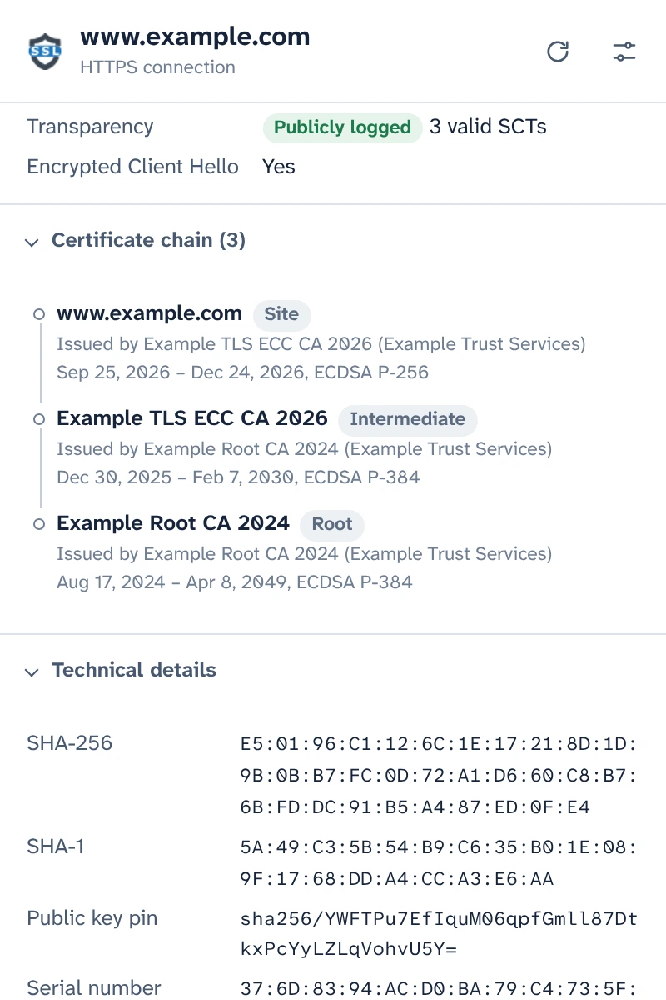
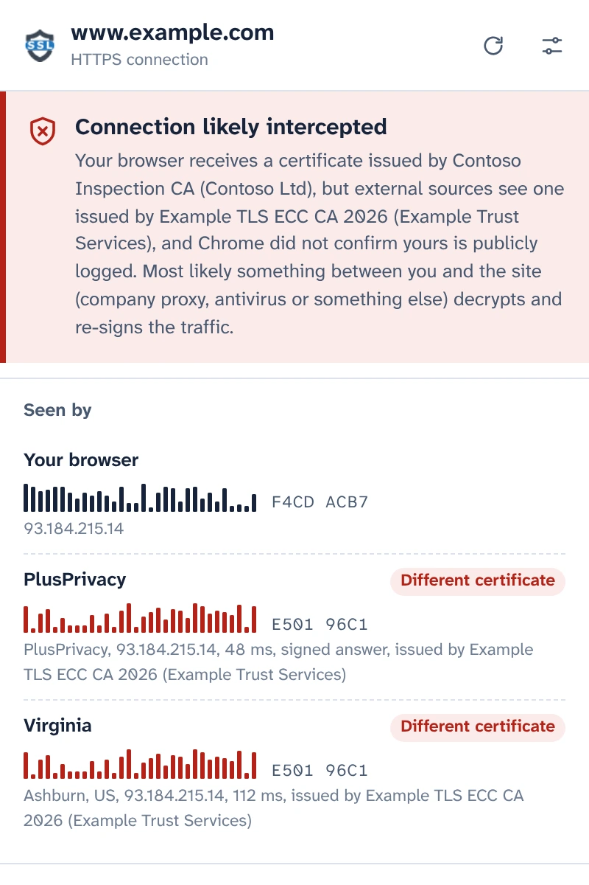
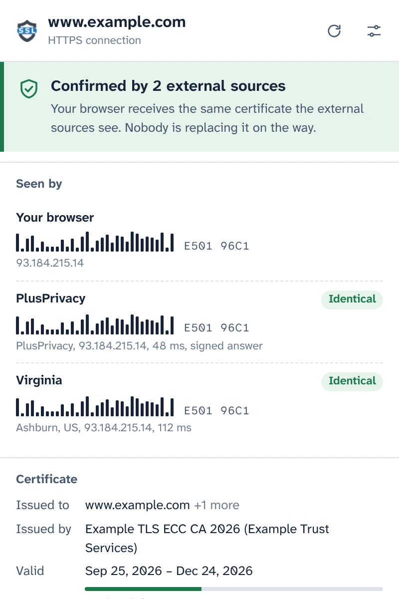
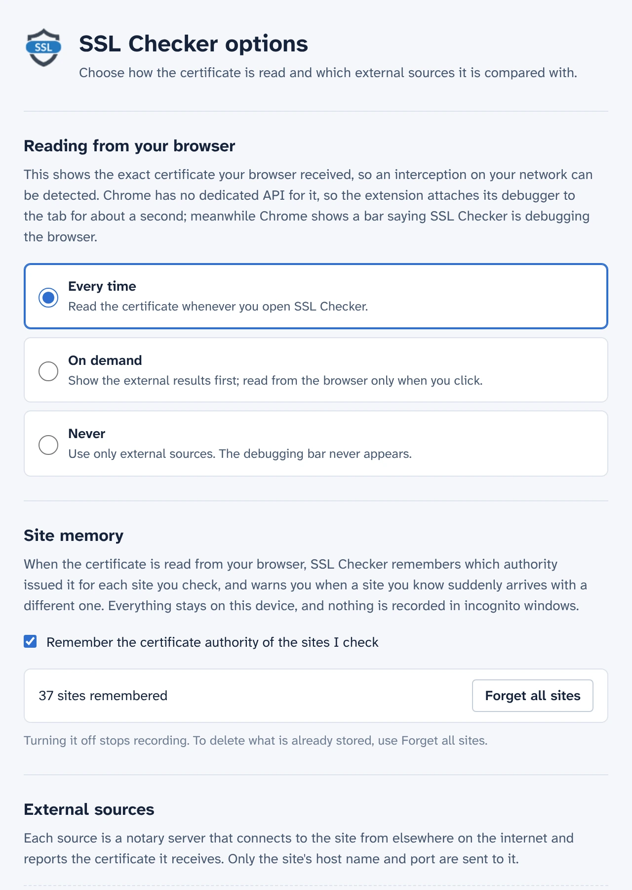

See the certificate your browser actually received
SSL Checker reads the certificate of the site in your tab straight from Chrome and compares it with what independent notaries see from elsewhere on the internet. If the two differ, something between you and the site is replacing it.
Free and open source. No account, no analytics.
Confirmed by 2 external sourcesConnection likely intercepted
Your browser receives the same certificate the external sources see. Nobody is replacing it on the way.Your browser receives a certificate issued by Contoso Inspection CA, but the external sources see one issued by Example TLS ECC CA 2026.
- Your browser E501 96C1F4CD ACB7
- PlusPrivacy IdenticalDifferent certificate E501 96C1
- Virginia IdenticalDifferent certificate E501 96C1
Every detail of the connection
What Chrome received for this tab, read from the browser itself rather than fetched again from a server.
- Names covered, issuer, validity and days left, validation level (DV, OV, EV)
- TLS version, key exchange including post-quantum hybrids, cipher and Encrypted Client Hello
- Certificate Transparency status and the signed certificate timestamps
- The full chain, fingerprints and every extension. Copy the PEM or download the chain.

Catch HTTPS interception
Company proxies, antivirus HTTPS scanning and attackers on public Wi-Fi work the same way: they decrypt your traffic and hand your browser a certificate of their own. The page looks normal and the padlock stays.
SSL Checker asks the PlusPrivacy notary, and any notary you add, which certificate the same site shows them. They connect from elsewhere on the internet, past whatever sits on your network, and the fingerprints are compared:
- Same certificate everywhere: confirmed.
- Yours is different and not publicly logged: likely intercepted. SSL Checker names the authority that issued the replacement and recognizes known inspection products.
- The sources disagree with each other: reported as such, with what each case can mean.

Answers nobody on the way can fake
Something that intercepts your traffic could also try to answer in a notary's name. It cannot make that work: the PlusPrivacy notary signs every answer with Ed25519, and SSL Checker checks the signature, a random number sent with each question and the site it asked about. A forged, replayed or redirected answer is refused, and the popup says that something changed it.
Run your own notary
The notary is open source: a small Node.js service for Docker, protected against floods and against requests to private networks. Install it on any server, add its address and key in Options, and its answers are checked the same way.

You decide when the debugger runs
Chrome has no extension API for the certificate of a loaded page, so SSL Checker attaches Chrome's debugger to the tab for about a second while it reads it, and Chrome shows its debugging bar meanwhile. In Options you choose when that happens:
- Every time you open the popup
- On demand, with one click in the popup
- Never: only the notaries are asked
It remembers the sites you check
SSL Checker remembers which certificate authority each site uses and warns you when a site you know suddenly arrives with a different one, for example on a new Wi-Fi network. This memory stays on your device, is never used in incognito windows, and can be turned off or wiped in Options.

Private by design
- Nothing is read or sent until you agree in the popup.
- Only the site's host name and port leave your device, in the body of an HTTPS request to the notaries you use.
- The PlusPrivacy notary keeps no record of the sites checked. You can turn it off, or ask only notaries you run.
- No analytics, no tracking, no account. The site memory never leaves your device.
- This website has no analytics either, and loads nothing from other servers.
POST /v1/cert
Content-Type: application/json
{
"host": "www.example.com",
"port": 443,
"nonce": "Xq3MpTb0vR9kLs2eWn5yZA"
}